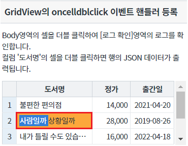
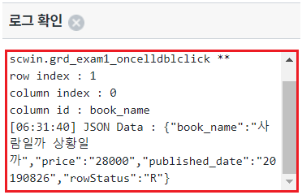
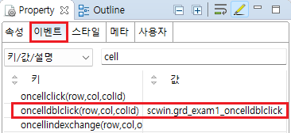
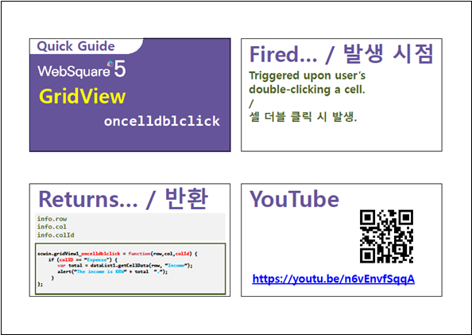

GridView의 이벤트 onCellDblClick 예제입니다. onCellDblClick 이벤트는 Body영역의 셀이 클릭된 경우 발생합니다. 지정된 이벤트 핸들러에서 클릭된 셀의 row index, column index, column id 값을 확인할 수 있습니다.
oncellclick과 함께 사용하는 경우 oncellclick이 2회 발생한 이후에 oncelldblclick이 발생합니다.
dblclick이 발생하려면 반드시 click이 2회 발생해야 하므로 dblclick과 click을 별개의 동작으로 구분하여 이벤트를 처리할 수 없습니다.
이벤트 oncelldblclick 발생 시 로그 출력하기
영역 [GridView의 oncelldblclick 이벤트 핸들러 등록]의 GridView를 확인합니다.
컬럼 '도서명'의 2번째 행의 셀을 클릭합니다.
[브라우저(Chrome) 실행 예시]

oncelldblclick 이벤트가 발생되고 이벤트 핸들러가 실행되어 로그가 출력됩니다.
영역 [로그 확인] 또는 브라우저의 개발자 도구의 콘솔(console)탭에 출력된 로그를 확인합니다.
[브라우저(Chrome) 실행 예시 - 로그 확인]

[로그 예시]
[06:31:40] ** scwin.grd_exam1_oncelldblclick **
row index : 1
column index : 0
column id : book_name
[06:31:40] JSON Data : {"book_name":"사람일까 상황일까","price":"28000","published_date":"20190826","rowStatus":"R"}
예제 파일에서는 핸들러로 사용할 함수명을 scwin.grd_exam1_oncelldblclick로 정의하였습니다.
그림 1.웹스퀘어5 SP5 스튜디오의 Property View(속성창)의 이벤트 탭 예시

[소스 코드 예시]
<!-- gridView 의 소스 본문 예시 --> <w2:gridView ev:oncelldblclick="scwin.grd_exam1_oncelldblclick" id="grd_exam1"> <!-- 중략 --> </w2:gridView>
STEP2. 핸들러 함수 scwin.grd_exam1_oncelldblclick를 정의합니다.
[소스 코드 예시]
/** * GridView grd_exam1의 oncelldblclick 이벤트 핸들러 */ scwin.grd_exam1_oncelldblclick = function (row, col, colId) { //console에 log 출력 console.log(row, col, colId); //컬럼별 로직 구현 예시 - 도서명을 double click한 경우 현재 행의 데이터를 JSON으로 출력 switch (colId) { case "book_name": //연결된 DataList를 모르는 경우 //let jsnRowData = $p.getComponentById(this.getDataList()).getRowJSON(row); //연결된 DataList를 아는 경우 let jsnRowData = dlt_books_1.getRowJSON(row); //textarea에 log 출력 $c.frame.printExampleLog("JSON Data : "+JSON.stringify(jsnRowData), txa_log, false); //console에 log 출력 console.log(jsnRowData); break; case "price": break; case "published_date": break; default: break; } };
oncelldblclick
[DataList].getRowJSON
[웹스퀘어5 SP5 개발 가이드] GridView
링크 : https://docs1.inswave.com/sp5_user_guide/bc10c1b82c9a2a0b#e1c4658baf7e726f
[웹스퀘어5 SP5 개발 가이드] GridView oncelldblclick
링크 : https://docs1.inswave.com/sp5_user_guide/86bdcf48029b958b#0bbf8bd3702b29be
GridView oncelldblclick
링크 : https://youtu.be/n6vEnvfSqqA
